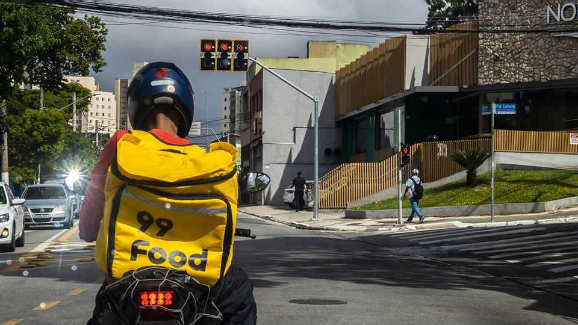
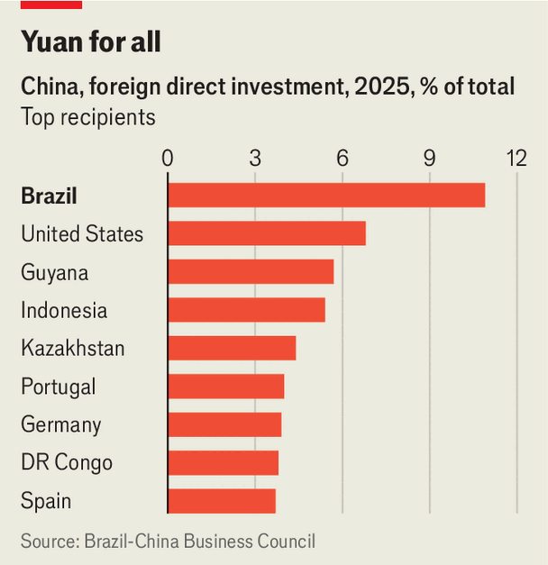

Brazilians are going gaga for Chinese brands
They think China has better tech than America
July 2nd 2026

Fernanda Lima and Rodrigo Hilbert are known as “Brazil’s favourite couple”. She is an attractive television presenter. He is a handsome handyman who hosts home-improvement and cooking shows. Their twin boys are models. And now the whole family are brand ambassadors for Geely, a Chinese maker of electric vehicles. “A beautiful family like that has real influence here in Brazil,” grins Jianjun Chen of Renault Geely, the firm’s Brazilian wing. “We only arrived in Brazil last year, so we have to hurry up with the marketing.”

Chinese brands have become ubiquitous in Brazil. Affluent Brazilians drive cars made by BYD, use phones made by Huawei, watch televisions produced by Hisense, order meals with 99Food, a delivery app (see main picture), and shop online at Shopee. In 2025 Chinese companies invested at least $6bn in Brazil, according to data collected from corporate disclosures by the American Enterprise Institute, a think-tank in Washington, and the China-Brazil Business Council. That was more than 10% of all their large overseas investments. And it was more than Chinese companies invested in any other foreign country.
Investments in manufacturing have overtaken those in oil and mining. In August Great Wall Motors (GWM) started production at a plant formerly owned by Mercedes Benz. In October BYD opened a $1bn factory, its largest outside Asia, on the site of a former Ford plant in northern Brazil. Geely has bought a 26% stake in Renault Brazil, which already has a factory in the south. BYD and GWM were the fastest-growing car brands last year in Brazil, with Chery, another Chinese competitor, following close behind.
These companies are spending mountains on marketing. To promote its premium SUVs, Chery hired Bruna Marquezine, an actress and model, at a rumoured cost of 10m reais (around $2m). As well as partnering with the Lima-Hilberts, Geely has sponsored “Big Brother Brasil”, a reality television show. “It was the best investment we have made so far this year,” says Mr Chen. BYD has paid for its cars to feature in two prime-time soap operas. In one episode, a driver for one of the show’s wealthy protagonists buys a BYD for himself, telling viewers: “Electric cars are for everyone. They ain’t just for the rich!”
Lately these and other Chinese firms have spied a new opportunity: to provide massive batteries for power grids. It is hoped that Brazil’s first battery auction, scheduled for December, will raise $1.5bn of investment in cells designed to store surplus power from solar panels and wind turbines, and feed data centres. On June 17th BYD said its next phase of investments in Brazil would be in batteries. Daniel Abdo of Sigma Lithium, Brazil’s largest lithium company, says the company’s main mine in Araçuaí, in Minas Gerais, has been “full of Chinese visitors”. Many of them have grid-scale storage in mind.

Chinese money is flowing to Brazil in part because European countries and America have been throwing up protectionist barriers. But it also matches China’s domestic priorities. In the early 2000s its firms invested in Latin America to secure natural resources; in the 2010s they built lots of infrastructure to help export excess steel. Now China is seeking places where it can dominate in high-tech fields. “All the attention from our headquarters, all of our resources, are being focused on Brazil,” says Matheus Benatti of Hisense Brazil. Atilio Rulli, the head of public affairs for Huawei Brazil, says that this year Brazil will bring in more revenue for Huawei than any country except China.
It helps that the governments of Brazil and China get on. China has been Brazil’s largest trading partner since 2009, when it surpassed the United States. On June 25th the country’s finance minister, Dario Durigan, said that for the first time Brazil will borrow in yuan. In April the administration of Luiz Inácio Lula da Silva was accused of firing a labour-ministry official for including BYD on a list of employers accused of subjecting workers to slave-like conditions (the government said it was a routine personnel change). In 2024 Brazilian police rescued more than 160 Chinese workers brought in to build BYD’s factory in Bahia, who were found living underpaid in squalid quarters. BYD has said it was unaware of the conditions and blamed a subcontractor; it says it has cleaned up its act.
Ordinary Brazilians are also warming to China. They increasingly see it as the world’s top technological power. Around half of Brazilians think China is leading the world in AI, compared to 39% who think America is ahead, according to a poll by Public First, a consultancy in London. “In the past consumers had reservations about Chinese brands,” acknowledges Andy Fang of Huawei Brazil. No more.
Many Brazilians are leery of Donald Trump. In May he and Lula had a friendly meeting in the White House. But days later Jamieson Greer, the United States Trade Representative, called for tariffs of 25% on many Brazilian exports. Brazilians see Mr Greer’s justification—“unfair trade practices”—as a cover for protectionism. On June 18th Mr Trump told Axios, a news site, that he “couldn’t care less” about Lula.
Chinese investors are unfazed by Brazil’s general election in October. “The private sector is much more important in pushing this relationship forward than anything to do with governments,” says Hsia Sheng of the Getulio Vargas Foundation, a university in São Paulo. “If the election mattered, investments would have stopped, but the opposite is happening.” That may be bad news for Mr Trump, who appears to think that if Lula’s right-wing rival wins power, the country will loosen its ties with China. “Frankly, there are no people in the American administration that understand Brazil right now,” says one analyst. It shows. ■
Sign up to El Boletín, our subscriber-only newsletter on Latin America, to understand the forces shaping a fascinating and complex region.